TL;DR
Demo
We render a novel free-form trajectory across five highly diverse sequences using the same model. We obtain the trajectory by interpolating between keyframes selected throughout a common geographic area at a constant speed of 10 m/s. We render each sequence with its unique apperance and set of dynamic objects, simulating various distinct traffic scenarios.
Overview
What?
We propose 4DGF, a neural scene representation that scales to large-scale dynamic urban areas, handles heterogeneous input data, and substantially improves rendering speeds.
Why?
Recently, 3D Gaussian Splatting has achieved high-quality novel view synthesis at impressive speeds. However, it is limited to small-scale, homogeneous data, i.e. it cannot handle severe appearance and geometry variations due to weather, season, and lighting and does not scale to larger, dynamic areas with thousands of images.
How?
We use 3D Gaussians as an efficient geometry scaffold while relying on neural fields as a compact and flexible appearance model. We integrate scene dynamics via a scene graph at global scale while modeling articulated motions on a local level via deformations.
In experiments, we surpass the state-of-the-art by over 3 dB in PSNR and more than 100x in rendering speed.
Method
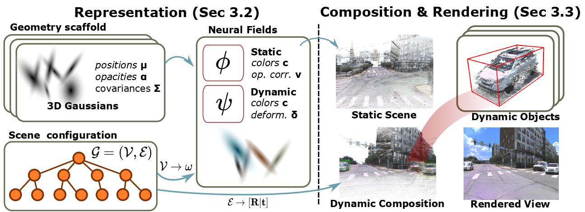
We use sets of 3D Gaussians $G$ as geometry scaffold, neural fields $\phi$ and $\psi$ to represent sequence- and object-specific appearance and geometry variations, and a scene graph $\mathcal{G} = (\mathcal{V}, \mathcal{E})$ to express the scene configuration at each sequence-time pair $(s, t)$. We condition the neural fields with latent codes $\omega$ of the nodes in $\mathcal{V}$. To render a view at $(s, t)$, we compose the sets of 3D Gaussians using the coordinate system transformations $[\mathbf{R} | \mathbf{t}]$ along the edges $\mathcal{E}$.
Comparison to state-of-the-art
Our approach outperforms prior art by a significant margin on both established and our proposed benchmark while being faster in training and rendering. We provide qualitative illustrations below. Note that all results are rendered from a single model trained on multiple sequences.
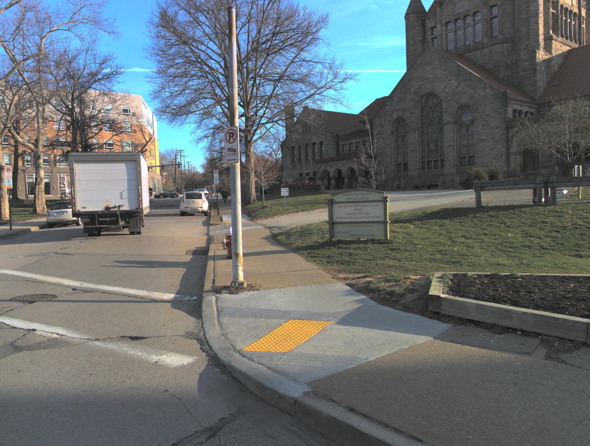
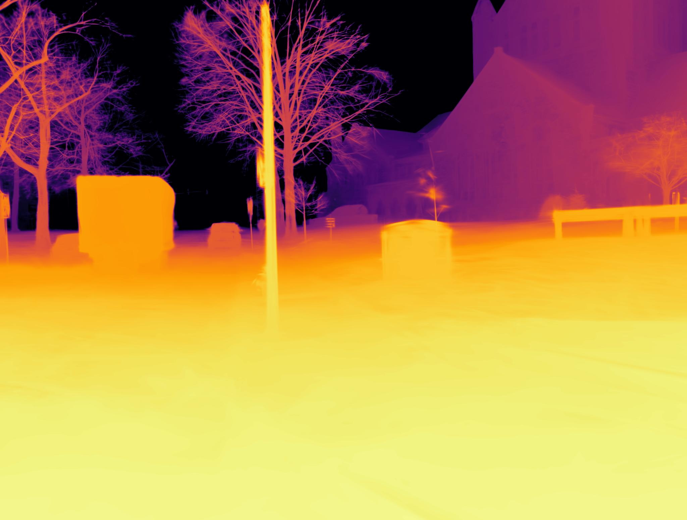
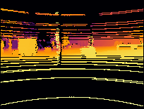
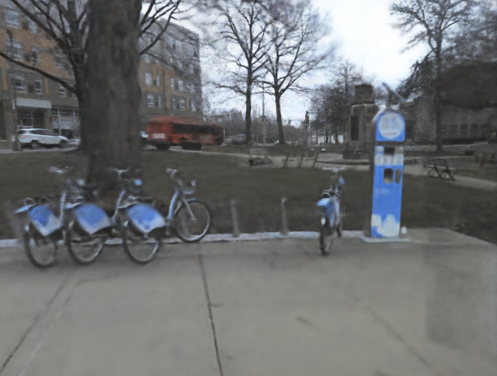
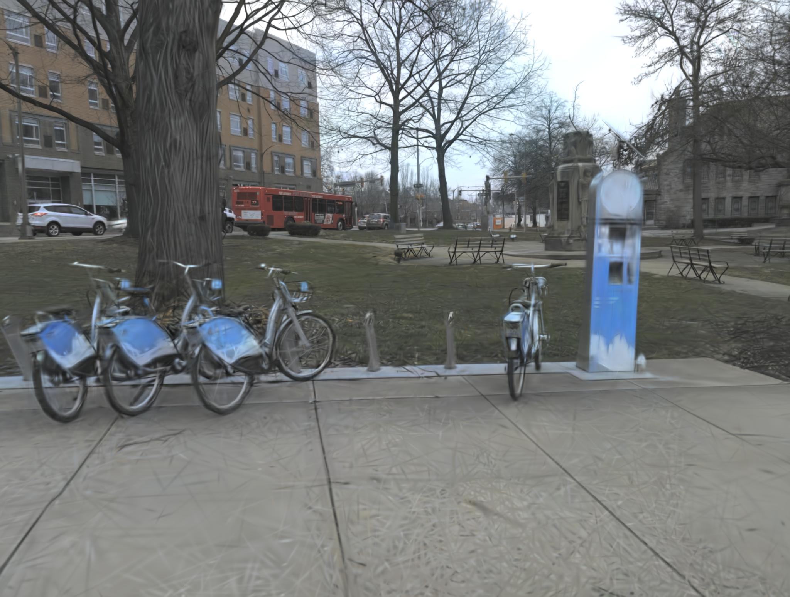
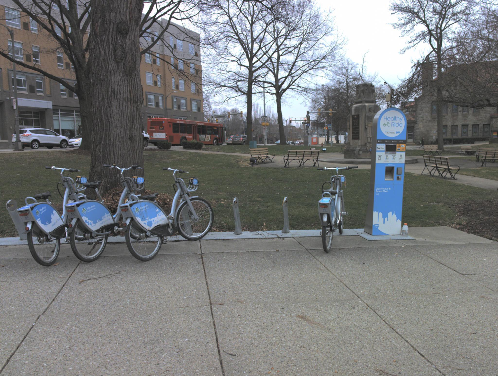
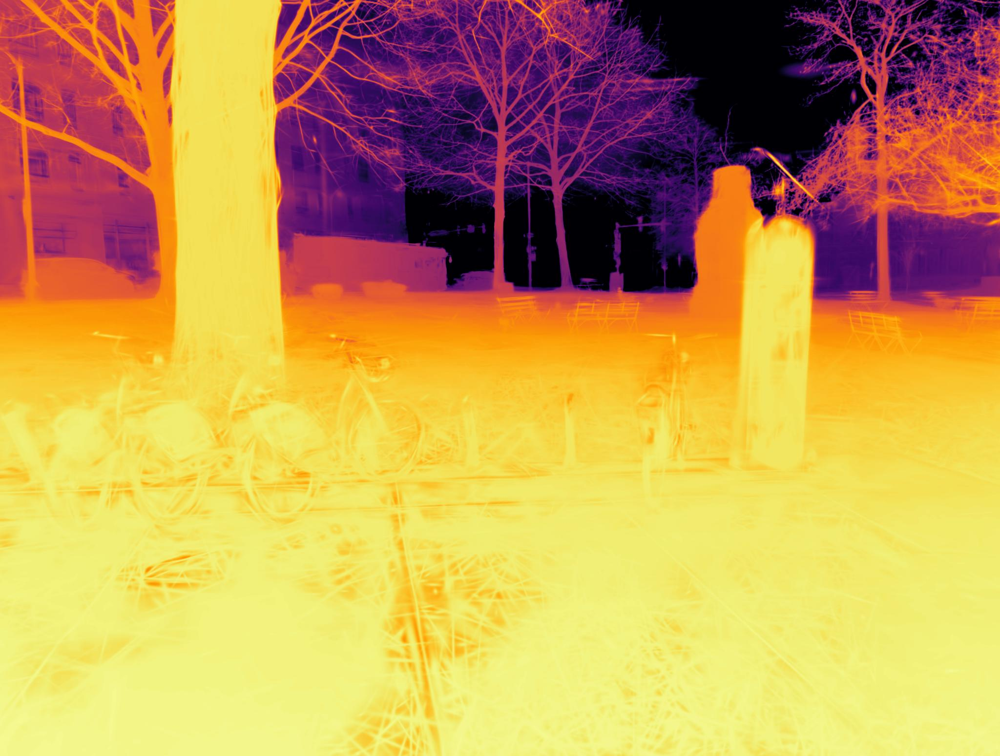
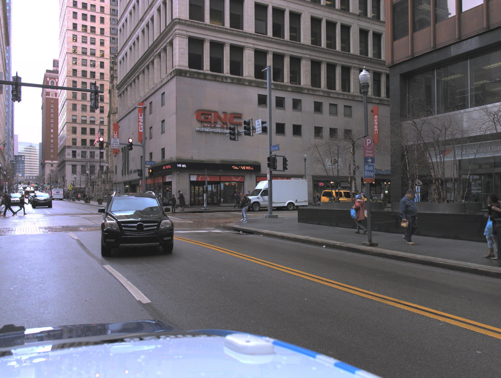
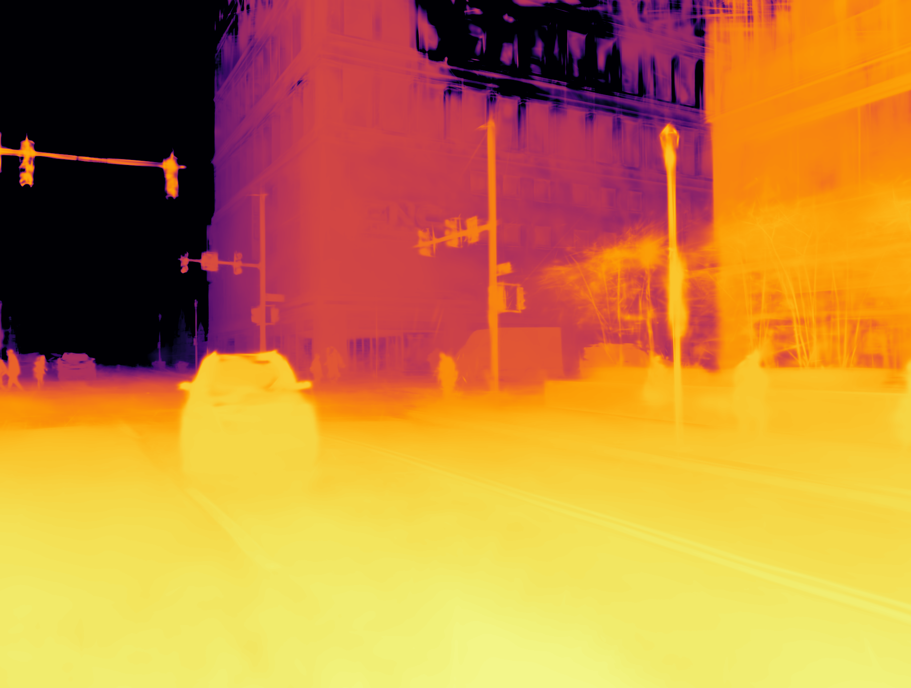
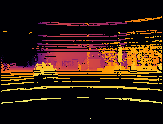
Single-Sequence Results
We show results on the Waymo Open dataset when training on a single sequence as in other contemporary methods. We synthesize novel views along the initial ego-vehicle path in a spiral.
Poster
BibTeX
@InProceedings{fischer2024dynamic,
author = {Tobias Fischer and Jonas Kulhanek and Samuel Rota Bul{\`o} and Lorenzo Porzi and Marc Pollefeys and Peter Kontschieder},
title = {Dynamic 3D Gaussian Fields for Urban Areas},
booktitle = {The Thirty-eighth Annual Conference on Neural Information Processing Systems},
year = {2024}
}Tobias Fischer
Dr. Tobias Fischer is a Researcher at Apple.